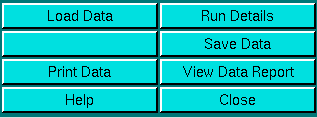

|
Manual
|
Equilibrium: Ln(C) vs. r 2 Analysis:
The Ln(C) vs.r2 analysis can be used as a first order
check on the quality of equilibrium data. The analysis doesn't require
any non-linear least squares fitting, and provides some rudimentary
statistics, such as standard deviation, correlation coefficient
and runs analysis. This analysis should not be used for a detailed
description of the sample, since at most it can only verify the presence
of homogeneity or heterogeneity. More sophisticated methods such as non-linear global fitting methods should be employed
for a more detailed analysis of equilibrium data.
The Ln(C) vs.r2 analysis is started from the
equilibrium menu in the main menu
of UltraScan. This will display the the Ln(C) vs. r 2 data analysis window.
The first step in the analysis requires that you load an
UltraScan equilibrium dataset that has previously been edited with
the UltraScan editing module. UltraScan
sedimentation equilibrium datasets always have the suffix ".us.e". Click
on the "Load Dataset" button in the left upper corner of the control
panel. Simply select the desired run from the selection of available runs
in the dataset loading dialog. Once loaded,
the Run Details will be shown. Click on
the "Accept" or "Cancel" button, and you will be returned
to the analysis window, which will show the first
available dataset of the selected run in the edited data window on the
lower right panel, and the Ln(C) vs. r 2 analysis will be shown
in the upper right panel of the analysis window.
Next, you can use the baseline adjustment tool
to adjust the baseline to minimize residuals visually/manually. Note that
not all scans in the same cell will necessarily show best residuals with
the same baseline:
|
Uncorrected Baseline


|
|
Corrected Baseline


|
Analysis Functions:
|  |
Click on these buttons to control the Ln(C) vs. r 2
analysis:
-
Load Data: Load edited data sets (with the *.us.e suffix). A
file dialogue will allow you to select a
previously edited and saved velocity experiment. If the data was edited
with a version of UltraScan less than 4.0, an error
message will be displayed.
-
Run Details: View the diagnostic details
for a particular run.
-
Save Data: Write out a copy of all results to an ASCII formatted
data file suitable for import into a spreadsheet plotting program. See
"File Structures and Formats" for details.
Note: These files are overwritten each time this button is clicked. Only
the last version of the analysis will be saved!
-
Print Data: Load the printer control panel for printing of plot
graphics
-
View Data Report: Review the data report for the last analysis setting.
Note: This file is re-written each time it is accessed. Only the current
analysis result is available. This file
will provide information about molecular weight as well as fitting statistics.
-
Help: This help file
-
Close: Close the Ln(C) vs. r 2 analysis window.
|
Run Information:
 |
-
Run ID: The name of the run given during editing
-
Temperature: The average temperature calculated from the entire run
-
Available Cells: The numbers the cells that contain analyzable data
Clicking on a cell, wavelength and channel selection will bring up
the cell contents description for that cell and wavelength. Scroll
through the cell listing to bring up information for cells > 3. If
there is no data available for the selected cell, the program will list
"No Data available". Selecting a cell/wavelength/channel combination
will automatically bring up the corresponding dataset and present the
analysis. Note: Not all experimental data contains multiple
channels or wavelengths. Only data edited with the 6-channel centerpiece
will provide multi-channel data, otherwise the channel selection
dialogue will be disabled. |
Experimental Parameters:
 |
Here you can enter the corrections for density and partial
specific volume of your sample. As you change the information in these
fields, the program will automatically update the analysis to correct the
results according to the specified conditions.
-
Density: Click to calculate the density
based on the composition of your buffer.
-
vbar(20o): Click to calculate
the partial specific volume for a peptide based on its primary amino acid
sequence and correct the vbar value for the current temperature.
- Reset Data: Reset all parameters to the default values, which
includes restoring all scans that have been excluded, resetting the smoothing
and baseline value to zero, and resetting the boundary to 100%.
|
Analysis Controls:
 |
- Adjust Baseline: Since inclusion of the baseline as a parameter
into the fit would cause the fit to be nonlinear and require an iterative
fitting procedure, the baseline can in this analysis routine only be adjusted
by manual intervention. You can use this counter to fine-tune the baseline
offset for all scans and attempt to improve the fitting statistics by finding
an optimal value for the baseline. Alternatively, you can overspeed the
experiment at the end of the run and pellet all material in order to obtain
a baseline value. You can use this counter to dial in the experimentally
determined baseline value.
-
Data Smoothing: Use this feature to smooth the experimental data.
For noisy data, increasing this parameter can improve the clarity and appearance
of the results considerably. Please note: Whenever possible, especially
for steep gradients, try to avoid using too much
smoothing to prevent artificial modification of the boundary shape. Smoothing
is performed based on a frame average. The number shown represents the
size of the smoothing kernel used (the number of datapoints averaged for
a single point). The algorithm used is non-destructive of the original
data and hence the smoothing is reversible. Also, point smoothing is
independent,
where the smoothing of one point does not have any effect on the smoothing
of its neighbors. Only unsmoothened points are used for the calculation
of the smoothed value. Each time you click on the counter, the current dataset
will be reset to the full dataset.
-
% of Boundary: This is the portion of the boundary used for the
analysis. 100 % refers to the entire boundary, reaching from the baseline
concentration value to the plateau concentration value. This portion is
shown in yellow in the experimental data plot at the lower right panel
of the Second Moment analysis window. Excluded data is shown in blue. Changing
this number will automatically reset the position of the analyzable portion
of the boundary in the center of concentration between the baseline and
the plateau concentration.
-
Boundary Position (%): For percent-boundary values less than
100 %, this number refers to the percentage of total concentration by which
the remainder (=un-analyzed portion of the boundary) is shifted away from
the baseline. A value of 0% refers to a data analysis start at the baseline.
This number is always less than or equal to 100 % - (% of Boundary). It
allows you to control the position of the analyzed portion relative to
the baseline. The blue colored portion of a scan is excluded from the analysis,
and the yellow portion is analyzed.
-
Exlude Single Scan: When setting this counter to a non-zero value,
the respective scan will be highlighted in red. Clicking on "Excl. Single
Scan" while a scan is highlighted in red will delete this scan from the
analysis. Deleting scans from the analysis is irreversible and can only
be reset by clicking on the "Reset" button or by reloading the data (when
smoothing, the data is always automatically reloaded).
-
Exclude Scan Range: Same as "Exclude Single Scan", except
for multiple scans. To use this feature, select first the start scan of
the range by using "Exclude Single Scan", then complete the scan
range by using "Exclude Scan Range". Use this feature to exclude
a range of scans.
-
Status: The status bar is not used in this analysis, since calculations
are very fast.
|
www contact: Borries Demeler
This document is part of the UltraScan Software Documentation
distribution.
Copyright © notice.
The latest version of this document can always be found at:
http://www.ultrascan.uthscsa.edu
Last modified on January 12, 2003.
{kind=link}
{kind=link}
{kind=link}
{kind=link}
{kind=link}
{kind=link}